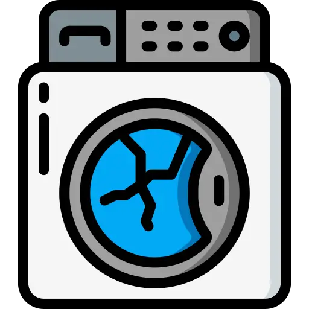
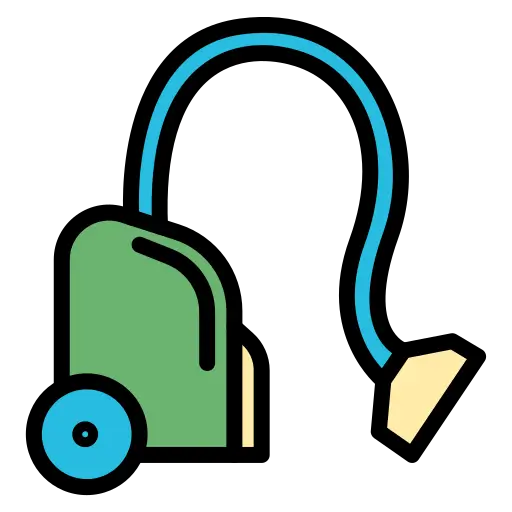
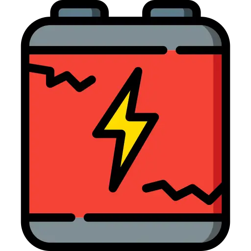

Aqui você encontrará tudo o que você precisa saber sobre o lixo eletrônico, que tem mostrado um problema grave e crescente para o meio ambiente e para a saúde humana.
ComeçarO que é o lixo eletrônico?
Lixo eletrônico, Resíduos de Equipamentos Elétricos e Eletrônicos (REEE) ou e-lixo são termos utilizados para se referir a todos os equipamentos eletrônicos. Mas também as suas partes e acessórios que foram descartados por seus proprietários, sem a intenção de reutilizá-los. As tecnologias do mundo moderno possibilitam que novos aparelhos sejam lançados e novas tendências surjam rapidamente no mercado. Esse é um processo planejado que leva o consumidor a substituir seus equipamentos eletrônicos sem necessidade, gerando um volume maior de lixo eletrônico.
O problema do lixo eletrônico
Ele pode causar diversos impactos ambientais e para a saúde humana se descartado de maneira incorreta. De acordo com um relatório da ONU, o Brasil descarta e produz em média 1,5 milhão de toneladas de lixo eletrônico por ano. Trazendo diversos danos como:
- - Contaminação por metais pesados;
- - Danos à saúde pública;
- - Redução do tempo de vida dos aterros;
- - Poluição do solo e da água;
- - Desabrochar doenças nos seres humanos que habitam nas redondezas ou consomem a água contaminada;
- - Composição que demora anos para decompor, devido ao material (plástico, vidro e metal).
Qual a importancia do descarte correto do lixo eletrônico?
O descarte de lixo eletrônico é um tema de extrema importância nos dias atuais, dado o crescente avanço da tecnologia e a consequente obsolescência rápida de dispositivos eletrônicos. Desde celulares e computadores até eletrodomésticos e equipamentos industriais, o descarte inadequado desses produtos pode gerar sérios impactos ambientais e de saúde pública.
Em primeiro lugar, muitos dispositivos eletrônicos contêm substâncias tóxicas, como chumbo, mercúrio, cádmio e retardantes de chama, que podem contaminar o solo, a água e o ar se forem descartados de maneira incorreta. Essas substâncias podem causar danos à saúde humana, como problemas respiratórios, distúrbios neurológicos e até câncer, além de afetar negativamente a flora e a fauna locais.
Além disso, os eletrônicos descartados também contêm materiais valiosos, como ouro, prata, cobre e outros metais preciosos, que podem ser recuperados e reciclados. No entanto, quando esses dispositivos são simplesmente jogados no lixo comum, esses recursos preciosos são perdidos e a demanda por mineração de novos materiais aumenta, exacerbando o impacto ambiental associado a essa atividade.
Portanto, é essencial adotar práticas de descarte adequadas para o lixo eletrônico, como a reciclagem e a reutilização. Muitas empresas e organizações oferecem programas de reciclagem de eletrônicos, onde os dispositivos antigos podem ser entregues para desmontagem segura e recuperação de materiais. Além disso, é importante incentivar a doação de eletrônicos usados para instituições de caridade ou programas de recondicionamento, permitindo que esses dispositivos tenham uma segunda vida útil antes do descarte final.
Ao adotar práticas responsáveis de descarte de lixo eletrônico, podemos reduzir os impactos negativos sobre o meio ambiente, preservar recursos valiosos e proteger a saúde pública, contribuindo assim para um futuro mais sustentável e saudável para todos.
Tipos de lixo eletrônico
O lixo eletrônico pode ser dividido em quatro categorias básicas, cada uma com características específicas em termos de tamanho e aplicação. Se não forem tratadas corretamente podem ter impactos negativos no meio ambiente e na saúde humana. Além disso, os processos de coleta, transporte e reciclagem variam para cada uma delas, destacando a importância da gestão adequada.

Grandes eletrodomésticos: geladeiras, freezers, máquinas de lavar, fogões, ar condicionados, grandes TVs, entre outros.

Pequenos eletrodomésticos e eletroportáteis: torradeiras, batedeiras, aspiradores de pó, ventiladores, secador de cabelo, câmeras, rádios, etc.
Equipamentos de informática e telefonia: computadores, tablets, notebooks, celulares, impressoras, monitores etc.

Iluminação e Energia: pilhas modelos, recarregáveis, baterias portáteis, lâmpadas eletrônicas entre outros.
Informações extras e dúvidas
Segundo CETEM, cerca de 70% de metais pesados encontrados nos lixões e aterros sanitários controlados são
provenientes de equipamentos eletrônicos que são descartados incorretamente. Os aparelhos elétricos e eletrônicos possuem diversos
componentes químicos tóxicos. Se houver um descarte inadequado e incorreta desses aparelhos, esses resíduos tóxicos podem contaminar
o solo e água colocando em risco a saúde pública local. Alguns exemplos de substâncias tóxicas que podem ser encontradas com o lixo
eletrônico, que podem contaminar o solo e água e que ao ter contato com o ser humano pode causar um risco a saúde: Alumínio, Chumbo,
Mercúrio, Níquel e entre outras. A maioria dos aparelhos são compostos por plásticos, vidros e metais e estes materiais demoram
muito para se decompor no solo.
A conscientização sobre esse tema é muito importante para promover a educação ambiental e sensibilizar a
população sobre os efeitos negativos que o lixo eletrônico pode causar.
De acordo com o Artigo 33 da Lei N° 12.305/2010 na Política Nacional dos Resíduos Sólidos (PNRS), o fabricante
é obrigado a fazer a logística reversa dos eletroeletrônicos que comercializa. Ou seja, é responsabilidade do dono procurar o fabricante,
que é obrigado a recolher e descartar de forma ecologicamente correta.
Locais de reciclagem
Encontre o local de reciclagem de lixo eletrônico mais próximo a você em Fortaleza.